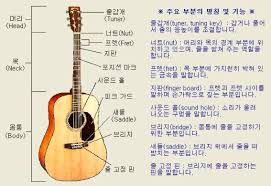

Guitar??
기타가 제일 쉬웠어요

JANUARY 30 | 21:30
통기타의 구조
Admin
Creative
3 Comments
사실 뭐 기타치는데 중요하진 않지만 그냥 프렛 하나만 기억하고 나머지는 그냥 읽고 넘어가면 된다.
Read More
JANUARY 30 | 21:30
일렉기타의 구조
Admin
Creative
3 Comments
여러 기타 종류가 있어 조금식 다르지만 가장 기본적인 기타형태입니다 제일중요한건 픽업 셀렉터와 톤입니다
Read More
JANUARY 30 | 2:30
반음과 온음에 대해서
Admin
Creative
3 Comments
도래미파솔라시도 에는 반음과 온음이 존재합니다 피아노 건반으로 설명을 하면 이해하기 쉬울껍니다
Read More
JANUARY 30 | 21:30
Stevie Ray Vaughan
Admin
Creative
3 Comments
텍사스 블루스하면 빼놓을수 없는 기타리스트 입니다 젊은 나이에 헬기사고로 일찍 세상을 떠났습니다
Read More
JANUARY 30 | 21:30
cream
Admin
Creative
3 Comments
에릭클랩튼이 있었던 밴드입니다 개인적으로 이때가 가장 연주력과 독창성이 뛰여난 시기였던거 같습니다
Read More
1
2
3
4
5
. . .
75